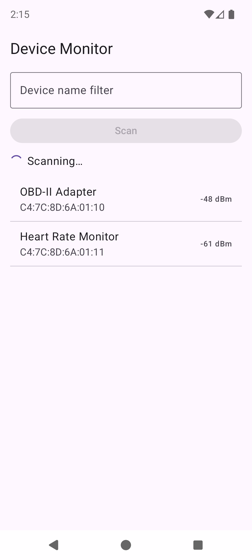
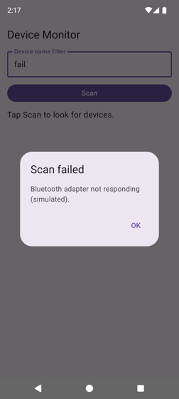
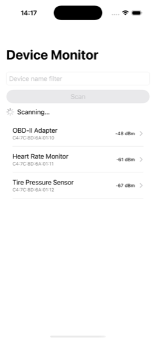
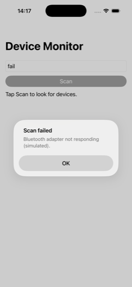

Lesson 05 · Week 2 · Native Device Monitor course
Shared ViewModels and Kotlin↔Swift
Primary source Android's UI layer guide: UI state, state holders, unidirectional data flow and StateFlow, all in one page. Read it after A2. iOS learners add SKIE's Flows page before Part B.
Tracks The ViewModel and everything in shared/ is the same on every track. Each track only changes how it observes the ViewModel: Compose and XML in A4, SwiftUI and UIKit in A5 and B3. The two Android tracks are finished after Part A, because Part B (SKIE) only changes iOS.
Part A — One ViewModel, two platforms (~2 h)
A1. Move the work out of the screen
A screen is the wrong owner for long-running work, because the platform destroys screens whenever it likes. Android recreates the Activity on rotation. Both platforms tear down screens you navigate away from. A ViewModel is an object whose lifetime is the screen's logical life rather than its views'. Android defines it as "a business logic or screen level state holder", whose "principal advantage is that it caches state and persists it through configuration changes" (ViewModel overview).
The toy below runs the scan both ways. Start a scan, then rotate or leave the screen while it's still running, and watch both logs.
Tap Scan, then rotate while it scans. Why does the m01 phone fall back to "Tap Scan to look for devices."?
The scan ran in the screen's coroutine scope, which is cancelled when the Activity is destroyed. Saved values do come back, but only the ones written down, and a running scan can't be written down.
Leave the screen during a scan. What stops the m02 scan?
Stopping observation stops nothing: the UI also stops collecting when you rotate, and the scan carries on. Work stops when its scope is cancelled, and viewModelScope is cancelled when the ViewModel is cleared. Tick the iOS checkbox and leave again to see what happens when nobody clears it.
When does a ViewModel get cleared? "A ViewModel remains in memory until the ViewModelStoreOwner to which it is scoped disappears": an Activity that finishes, a navigation entry "removed from the back stack", a composable that "exits the Composition" (same page). Any coroutine launched in viewModelScope "is automatically canceled if the ViewModel is cleared" (Kotlin coroutines with lifecycle-aware components). The ViewModel class is multiplatform since AndroidX Lifecycle 2.8 (KMP ViewModel), so it can live in commonMain and serve both apps.
| After… | m01: state in the screen | m02: state in a ViewModel |
|---|---|---|
| Android: rotating during a scan | scan cancelled; screen back to "Tap Scan…" | scan continues; the new screen picks up the current state |
| opening a device and coming back | Compose: kept only with rememberSaveable. XML / SwiftUI / UIKit: kept, because the Fragment, root view or view controller stays alive under the detail screen | kept: the list's ViewModel lives while its entry is on the back stack |
| leaving the screen for good | scan cancelled | ViewModel cleared, scan cancelled |
| Android process death (system kills the app in the background) | saved values restored | lost: a ViewModel is memory, not storage. SavedStateHandle fixes that and is out of scope here (same page). |
A2. Design the UI state first
Android's guide defines it in one line: "if the UI is what the user sees, the UI state is what the app says they should see." Make it immutable, because "immutable objects provide guarantees regarding the state of the application at an instant in time". Expose it from the ViewModel "in an observable data holder like StateFlow". The UI sends events up and gets state back: "the state flows down and the events flow up" (UI layer).
UI (Compose · XML · SwiftUI · UIKit)
│ startScan(filter) ▲ uiState: StateFlow<DeviceListUiState>
│ errorShown() │
▼ │
DeviceListViewModel (commonMain) ─┘
│ scan(filter): Flow<Device>
▼
FakeDeviceScanner (commonMain) ← a real BLE scanner from Lesson 08Make impossible states impossible. m01 described a scan with two independent variables. Two variables give four combinations, and one of them means nothing:
isScanning | devices | Meaning | Sealed ScanState |
|---|---|---|---|
| false | null | never scanned | Idle |
| true | […] | scanning, these found so far | Scanning(found) |
| false | […] | finished with these | Finished(found) |
| true | null | nothing, but the types allow it | can't be written |
A sealed interface (Lesson 01) lists exactly the three real states, each carrying only the data that state has. Every when over it must handle all three, so adding a fourth state later makes the compiler point at every screen that needs updating (exercise B1).
Errors are state, too. A scan failure needs a dialog shown once. It's tempting to send it as a one-off "event" through a Channel or SharedFlow. Android's guidance is direct: "ViewModel events should always result in a UI state update", because with Channels or other streams, "when the producer (the ViewModel) outlives the consumer (Compose UI), these solutions don't guarantee the delivery and processing of those events". So the message goes into the state, and when the UI has shown it, it calls back so the ViewModel clears it: "Either the user message is displayed, or it isn't" (UI events). Here that's errorMessage plus errorShown(). A bonus: the dialog survives rotation, because it's just state.
What stays in the UI. The filter text is input: the user owns it while typing, and the ViewModel only needs it when Scan is tapped. So it stays where m01 had it (rememberSaveable, @State, or the text field itself) and goes to the ViewModel as an argument: startScan(filter). Every keystroke then stays synchronous on every track, with no round trip through a flow.
From TypeScriptScanState is a discriminated union: type ScanState = { kind: "idle" } | { kind: "scanning"; found: Device[] } | { kind: "finished"; found: Device[] }. Kotlin's when is a switch with the never exhaustiveness check built in. it.copy(scan = …) is { ...state, scan: … }. A StateFlow is an RxJS BehaviorSubject (or an Angular signal): it always has a current value, and a new subscriber gets that value first. viewModelScope is takeUntil(destroy$) applied to everything the ViewModel starts.
A3. The shared code
Four files in shared/: the build file gains the ViewModel library, and three new Kotlin files hold the scanner, the state, and the ViewModel. The m01 files (Device.kt, SampleDevices.kt) stay as they are.
shared/build.gradle.kts
plugins {
id("org.jetbrains.kotlin.multiplatform")
id("com.android.kotlin.multiplatform.library")
}
kotlin {
android {
namespace = "com.example.devicemonitor.shared"
compileSdk = 37
minSdk = 26
}
listOf(iosArm64(), iosSimulatorArm64()).forEach { target ->
target.binaries.framework {
baseName = "Shared"
isStatic = true
export("androidx.lifecycle:lifecycle-viewmodel:2.11.0")
binaryOption("bundleId", "com.example.devicemonitor.shared")
}
}
sourceSets {
commonMain.dependencies {
api("androidx.lifecycle:lifecycle-viewmodel:2.11.0")
api("org.jetbrains.kotlinx:kotlinx-coroutines-core:1.11.0")
}
}
}androidx.lifecycle:lifecycle-viewmodelis Google's multiplatformViewModel, the same artifact Android apps use (KMP ViewModel). Version 2.11.0 matches the lifecycle libraries already in the app.api, notimplementation:ViewModelandStateFlowappear in the shared module's public API (the ViewModel extends one and exposes the other), so modules that use:sharedneed them too. Withapithe Android app gets coroutines through:shared, so it no longer depends on them only by accident through another library (Lesson 04's note).export(…)puts the library's classes into the iOS framework's public header under their own names, so Swift can useViewModelandViewModelStore(A5). Android's guide calls for it: "You need theapidependency declaration here if you want better access to the classes from Swift code."binaryOption("bundleId", …): as soon as we exported a library, the Kotlin/Native linker warnedCannot infer a bundle ID from packages of source files and exported dependencies, use the bundle name instead: Shared. Naming the bundle ID explicitly silences it. The course treats warnings as errors.
shared/src/commonMain/kotlin/com/example/devicemonitor/FakeDeviceScanner.kt
package com.example.devicemonitor
import kotlinx.coroutines.awaitCancellation
import kotlinx.coroutines.delay
import kotlinx.coroutines.flow.Flow
import kotlinx.coroutines.flow.flow
class ScanException(message: String) : Exception(message)
// Stand-in for the BLE scanner of Lesson 08. Like a real scan, devices arrive one at a
// time and the flow never completes on its own: the collector stops it by cancelling.
class FakeDeviceScanner {
fun scan(filter: String): Flow<Device> = flow {
// Test hook until Lesson 06's fake ports: the filter "fail" simulates a radio error.
if (filter.trim().equals("fail", ignoreCase = true)) {
delay(500)
throw ScanException("Bluetooth adapter not responding (simulated).")
}
for (device in SampleDevices.matching(filter)) {
delay(300)
emit(device)
}
awaitCancellation()
}
}flow { … }builds a coldFlow(Asynchronous Flow): nothing runs until someone collects it, and each collector gets its own run.emit(device)hands one value to the collector, anddelay(300)suspends without blocking a thread (Lesson 04, B2).awaitCancellation()suspends forever. A real BLE scan has no end, and it reports devices until you stop it. Making the fake behave the same way forces the ViewModel to stop it properly, which is the code Lesson 08 keeps.ScanExceptionis our own type, so the ViewModel can catch exactly this failure and nothing else (A3's ViewModel, point 6). The"fail"filter is a test hook, so you can reach the error path by hand. Lesson 06 replaces it with a fake port that tests control.
shared/src/commonMain/kotlin/com/example/devicemonitor/DeviceListUiState.kt
package com.example.devicemonitor
// Everything the device list shows that the user didn't type.
data class DeviceListUiState(
val scan: ScanState = ScanState.Idle,
val errorMessage: String? = null,
)
sealed interface ScanState {
data object Idle : ScanState
data class Scanning(val found: List<Device>) : ScanState
data class Finished(val found: List<Device>) : ScanState
}- One immutable
data classfor the screen. Default values makeDeviceListUiState()the initial state. Changes always produce a new object withcopy. data object Idleis a singleton with a readabletoString.ScanningandFinishedcarry the devices found, because only those states have any.
shared/src/commonMain/kotlin/com/example/devicemonitor/DeviceListViewModel.kt
package com.example.devicemonitor
import androidx.lifecycle.ViewModel
import androidx.lifecycle.ViewModelProvider
import androidx.lifecycle.viewModelScope
import androidx.lifecycle.viewmodel.initializer
import androidx.lifecycle.viewmodel.viewModelFactory
import kotlinx.coroutines.Job
import kotlinx.coroutines.flow.MutableStateFlow
import kotlinx.coroutines.flow.StateFlow
import kotlinx.coroutines.flow.asStateFlow
import kotlinx.coroutines.flow.update
import kotlinx.coroutines.launch
import kotlinx.coroutines.withTimeoutOrNull
import kotlin.time.Duration.Companion.seconds
class DeviceListViewModel(
private val scanner: FakeDeviceScanner,
) : ViewModel() {
private val _uiState = MutableStateFlow(DeviceListUiState())
val uiState: StateFlow<DeviceListUiState> = _uiState.asStateFlow()
private var scanJob: Job? = null
fun startScan(filter: String) {
if (scanJob?.isActive == true) return
_uiState.update { it.copy(scan = ScanState.Scanning(emptyList())) }
scanJob = viewModelScope.launch {
val found = mutableListOf<Device>()
try {
withTimeoutOrNull(SCAN_TIMEOUT) {
scanner.scan(filter).collect { device ->
found += device
_uiState.update { it.copy(scan = ScanState.Scanning(found.toList())) }
}
}
_uiState.update { it.copy(scan = ScanState.Finished(found.toList())) }
} catch (e: ScanException) {
_uiState.update { it.copy(scan = ScanState.Idle, errorMessage = e.message) }
}
}
}
fun errorShown() {
_uiState.update { it.copy(errorMessage = null) }
}
companion object {
val SCAN_TIMEOUT = 3.seconds
val Factory: ViewModelProvider.Factory = viewModelFactory {
initializer { DeviceListViewModel(FakeDeviceScanner()) }
}
}
}- The backing property.
_uiStateis a privateMutableStateFlow; the publicuiStateis read-only (asStateFlow()). Only the ViewModel can change state, and everyone else can only observe it. "StateFlowis a state-holder observable flow that emits the current and new state updates to its collectors" (StateFlow and SharedFlow). _uiState.update { it.copy(…) }computes the new state from the current one and swaps it in atomically. It's never_uiState.value.scan = …, because the state is immutable.if (scanJob?.isActive == true) return: a secondstartScanduring a scan is ignored. The disabled button already prevents it, but the ViewModel shouldn't rely on its UI for correctness.- State first, then launch.
Scanning(emptyList())is set synchronously, so the very next frame shows the spinner, which is Lesson 04's rule. ThenviewModelScope.launchstarts the slow part in the ViewModel's own scope. On both platforms it runs on the main thread (Dispatchers.Main.immediate), anddelaykeeps it from blocking. withTimeoutOrNull(SCAN_TIMEOUT)cancels the block after 3 s and returnsnullinstead of throwing, so execution continues to theFinishedline. This is how a never-ending scan stops "on timeout" (requirement A.3).catch (e: ScanException), notcatch (e: Exception). When the scope is cancelled (ViewModel cleared), aCancellationExceptionflies through this code. Catching everyExceptionwould swallow it and keep a dead ViewModel's coroutine running. Catch only what you can handle.found.toList()on every update hands the state a copy. AStateFlowonly emits a value that isn'tequalsto the current one. If the state shared the mutable list, the "new" state would already equal the old one. You'll test this in exercise A3.Factorytells the platform how to build this ViewModel, because the platform creates it, not you.viewModelFactory { initializer { … } }is the multiplatform way to write one. Both Android tracks and both iOS tracks use this same factory. Lesson 06 replaces it with Koin.
A4. Android: collect while visible
Collecting from the ViewModel is a different job from owning it. The UI collects only while it's on screen: "collection begins when the lifecycle is STARTED and stops when the lifecycle is STOPPED" (coroutines with lifecycle-aware components). The ViewModel keeps working the whole time, so when the UI starts collecting again, the StateFlow hands it the latest state first.
Compose track · androidApp/build.gradle.kts: one dependency added
plugins {
id("com.android.application")
id("org.jetbrains.kotlin.plugin.compose")
id("org.jetbrains.kotlin.plugin.serialization")
}
android {
namespace = "com.example.devicemonitor.android"
compileSdk = 37
defaultConfig {
applicationId = "com.example.devicemonitor"
minSdk = 26
targetSdk = 36
versionCode = 1
versionName = "1.0"
}
buildFeatures { compose = true }
}
dependencies {
implementation(project(":shared"))
implementation(platform("androidx.compose:compose-bom:2026.09.00"))
implementation("androidx.core:core-ktx:1.19.1")
implementation("androidx.activity:activity-compose:1.13.0")
implementation("androidx.compose.material3:material3")
implementation("androidx.navigation:navigation-compose:2.10.2")
implementation("androidx.lifecycle:lifecycle-runtime-compose:2.11.0")
implementation("androidx.lifecycle:lifecycle-viewmodel-compose:2.11.0")
implementation("org.jetbrains.kotlinx:kotlinx-serialization-core:1.12.0")
}Compose track · androidApp/src/main/java/com/example/devicemonitor/android/DeviceListScreen.kt
package com.example.devicemonitor.android
import androidx.compose.foundation.clickable
import androidx.compose.foundation.layout.Arrangement
import androidx.compose.foundation.layout.Column
import androidx.compose.foundation.layout.Row
import androidx.compose.foundation.layout.fillMaxSize
import androidx.compose.foundation.layout.fillMaxWidth
import androidx.compose.foundation.layout.padding
import androidx.compose.foundation.layout.size
import androidx.compose.foundation.lazy.LazyColumn
import androidx.compose.foundation.lazy.items
import androidx.compose.material3.AlertDialog
import androidx.compose.material3.Button
import androidx.compose.material3.CircularProgressIndicator
import androidx.compose.material3.HorizontalDivider
import androidx.compose.material3.ListItem
import androidx.compose.material3.MaterialTheme
import androidx.compose.material3.OutlinedTextField
import androidx.compose.material3.Text
import androidx.compose.material3.TextButton
import androidx.compose.runtime.Composable
import androidx.compose.runtime.getValue
import androidx.compose.runtime.mutableStateOf
import androidx.compose.runtime.saveable.rememberSaveable
import androidx.compose.runtime.setValue
import androidx.compose.ui.Alignment
import androidx.compose.ui.Modifier
import androidx.compose.ui.unit.dp
import androidx.lifecycle.compose.collectAsStateWithLifecycle
import androidx.lifecycle.viewmodel.compose.viewModel
import com.example.devicemonitor.Device
import com.example.devicemonitor.DeviceListViewModel
import com.example.devicemonitor.ScanState
// Stateful: owns the filter text and connects the shared ViewModel to the content below.
@Composable
fun DeviceListScreen(
onDeviceClick: (Device) -> Unit,
viewModel: DeviceListViewModel = viewModel(factory = DeviceListViewModel.Factory),
) {
var filter by rememberSaveable { mutableStateOf("") }
val state by viewModel.uiState.collectAsStateWithLifecycle()
DeviceListContent(
filter = filter,
onFilterChange = { filter = it },
isScanning = state.scan is ScanState.Scanning,
devices = when (val scan = state.scan) {
ScanState.Idle -> null
is ScanState.Scanning -> scan.found
is ScanState.Finished -> scan.found
},
onScan = { viewModel.startScan(filter) },
onDeviceClick = onDeviceClick,
)
state.errorMessage?.let { message ->
AlertDialog(
onDismissRequest = viewModel::errorShown,
confirmButton = { TextButton(onClick = viewModel::errorShown) { Text("OK") } },
title = { Text("Scan failed") },
text = { Text(message) },
)
}
}
// Stateless: renders whatever it's given, reports events up.
@Composable
fun DeviceListContent(
filter: String,
onFilterChange: (String) -> Unit,
isScanning: Boolean,
devices: List<Device>?,
onScan: () -> Unit,
onDeviceClick: (Device) -> Unit,
) {
Column(
modifier = Modifier.fillMaxSize().padding(16.dp),
verticalArrangement = Arrangement.spacedBy(12.dp),
) {
Text("Device Monitor", style = MaterialTheme.typography.headlineSmall)
OutlinedTextField(
value = filter,
onValueChange = onFilterChange,
label = { Text("Device name filter") },
singleLine = true,
modifier = Modifier.fillMaxWidth(),
)
Button(onClick = onScan, enabled = !isScanning, modifier = Modifier.fillMaxWidth()) {
Text("Scan")
}
ScanStatus(isScanning = isScanning, devices = devices)
LazyColumn(modifier = Modifier.weight(1f)) {
items(devices.orEmpty(), key = { it.id }) { device ->
DeviceRow(device = device, onClick = { onDeviceClick(device) })
HorizontalDivider()
}
}
}
}
@Composable
private fun ScanStatus(isScanning: Boolean, devices: List<Device>?) {
Row(
verticalAlignment = Alignment.CenterVertically,
horizontalArrangement = Arrangement.spacedBy(8.dp),
) {
when {
isScanning -> {
CircularProgressIndicator(modifier = Modifier.size(20.dp), strokeWidth = 2.dp)
Text("Scanning…")
}
devices == null -> Text("Tap Scan to look for devices.")
devices.isEmpty() -> Text(
"No devices found. Try another filter.",
color = MaterialTheme.colorScheme.error,
)
else -> Text("Devices found: ${devices.size}")
}
}
}
@Composable
private fun DeviceRow(device: Device, onClick: () -> Unit) {
ListItem(
headlineContent = { Text(device.name) },
supportingContent = { Text(device.id) },
trailingContent = { Text("${device.rssi} dBm") },
modifier = Modifier.clickable(onClick = onClick),
)
}viewModel(factory = DeviceListViewModel.Factory)(fromlifecycle-viewmodel-compose) returns the ViewModel of the nearestViewModelStoreOwner. Inside aNavHostthat owner is the navigation entry, so the ViewModel lives while the list is on the back stack. It survives the trip to the detail screen and rotation, and it's cleared when the entry is popped. As a default parameter, it can be replaced by a fake in a preview or test.collectAsStateWithLifecycle()turns theStateFlowinto ComposeStateand collects only while the screen is at leastSTARTED. Android calls it "the recommended way to collect flows on Android apps". PlaincollectAsStateis the platform-agnostic version, which keeps collecting in the background (State and Jetpack Compose).DeviceListContentdidn't change. Lesson 04 split the screen into a stateful wrapper and stateless content, and promised that a ViewModel would replace only the wrapper. That's what happened.remember,rememberCoroutineScope,delayandSampleDevicesall left this file.when (val scan = state.scan)maps the sealed state onto the content's two parameters. There's noelsebranch: the compiler checks that all three cases are handled.- The dialog is state. It exists while
errorMessageis non-null. Both "OK" and dismissing (tap outside, Back) callerrorShown(), which clears the message, and the next recomposition removes the dialog. Rotation can't lose it. viewModel::errorShownis a function reference, a lambda that callserrorShown()on that instance.
XML track · androidApp/build.gradle.kts
Unchanged. viewModels comes from fragment-ktx, repeatOnLifecycle from lifecycle-runtime-ktx, and the factory helpers and coroutines from :shared (api).
XML track · androidApp/src/main/java/com/example/devicemonitor/android/DeviceListFragment.kt
package com.example.devicemonitor.android
import android.graphics.Color
import android.os.Bundle
import android.view.LayoutInflater
import android.view.View
import android.view.ViewGroup
import androidx.appcompat.app.AlertDialog
import androidx.fragment.app.Fragment
import androidx.fragment.app.viewModels
import androidx.lifecycle.Lifecycle
import androidx.lifecycle.lifecycleScope
import androidx.lifecycle.repeatOnLifecycle
import androidx.navigation.fragment.findNavController
import androidx.recyclerview.widget.DividerItemDecoration
import com.example.devicemonitor.DeviceListUiState
import com.example.devicemonitor.DeviceListViewModel
import com.example.devicemonitor.ScanState
import com.example.devicemonitor.android.databinding.FragmentDeviceListBinding
import kotlinx.coroutines.launch
class DeviceListFragment : Fragment() {
// Survives rotation and the trip to the detail screen; cleared when this
// Fragment leaves the back stack for good.
private val viewModel: DeviceListViewModel by viewModels { DeviceListViewModel.Factory }
private var binding: FragmentDeviceListBinding? = null
private var errorDialog: AlertDialog? = null
private val adapter = DeviceAdapter { device ->
val nav = findNavController()
// A fast double tap delivers two clicks; only navigate from the list itself.
if (nav.currentDestination?.id == R.id.deviceList) {
nav.navigate(R.id.toDetail, Bundle().apply { putString("deviceId", device.id) })
}
}
override fun onCreateView(inflater: LayoutInflater, container: ViewGroup?, savedInstanceState: Bundle?): View {
val b = FragmentDeviceListBinding.inflate(inflater, container, false)
binding = b
b.deviceList.adapter = adapter
b.deviceList.addItemDecoration(DividerItemDecoration(requireContext(), DividerItemDecoration.VERTICAL))
b.scanButton.setOnClickListener { viewModel.startScan(b.filterInput.text.toString()) }
return b.root
}
override fun onViewCreated(view: View, savedInstanceState: Bundle?) {
super.onViewCreated(view, savedInstanceState)
viewLifecycleOwner.lifecycleScope.launch {
viewLifecycleOwner.repeatOnLifecycle(Lifecycle.State.STARTED) {
viewModel.uiState.collect { render(it) }
}
}
}
override fun onDestroyView() {
super.onDestroyView()
errorDialog?.dismiss() // a dismiss() doesn't call the cancel listener, so the error stays in state
errorDialog = null
binding?.deviceList?.adapter = null
binding = null
}
// The one place that touches views: every new state ends here. The EditText keeps its
// own text (and restores it after rotation), so render() never sets it.
private fun render(state: DeviceListUiState) {
val b = binding ?: return
val isScanning = state.scan is ScanState.Scanning
val devices = when (val scan = state.scan) {
ScanState.Idle -> null
is ScanState.Scanning -> scan.found
is ScanState.Finished -> scan.found
}
b.scanButton.isEnabled = !isScanning
b.progress.visibility = if (isScanning) View.VISIBLE else View.GONE
b.statusText.text = when {
isScanning -> "Scanning…"
devices == null -> "Tap Scan to look for devices."
devices.isEmpty() -> "No devices found. Try another filter."
else -> "Devices found: ${devices.size}"
}
b.statusText.setTextColor(if (devices?.isEmpty() == true && !isScanning) Color.RED else Color.DKGRAY)
adapter.submitList(devices.orEmpty())
renderError(state.errorMessage)
}
private fun renderError(message: String?) {
if (message == null) {
errorDialog?.dismiss()
errorDialog = null
} else if (errorDialog == null) {
errorDialog = AlertDialog.Builder(requireContext())
.setTitle("Scan failed")
.setMessage(message)
.setPositiveButton("OK") { _, _ -> viewModel.errorShown() }
.setOnCancelListener { viewModel.errorShown() }
.show()
}
}
}by viewModels { DeviceListViewModel.Factory }(fromfragment-ktx) scopes the ViewModel to this Fragment. It's created on first access, survives rotation (the Fragment is recreated, but itsViewModelStoreisn't), and is cleared when the Fragment leaves the back stack for good.- The state fields are gone, and so are
onSaveInstanceStateandonCreate. The Fragment holds no screen state any more, only views and the ViewModel reference. viewLifecycleOwner.repeatOnLifecycle(STARTED)runs thecollectblock "every time the lifecycle is in theSTARTEDstate (or above)" and "cancels it when it'sSTOPPED" (coroutines with Views). Use the view lifecycle, not the Fragment's: the views die while the Fragment sits on the back stack, andrendermust never touch dead views.render(state)is Lesson 04'srender(), now with the state as a parameter instead of fields. Every emission ends here, and nothing else touches a widget.- The EditText keeps the filter. It owns its text while the user types, restores it after rotation (it has an id), and is read once, when Scan is tapped.
- The red colour gained
&& !isScanning. A scan now starts asScanning(found = []). Lesson 04's rule (devices?.isEmpty() == true) would paint "Scanning…" red, the same bug as the Lesson 04 toy. Compose and SwiftUI never hit this, because theirwhen/ifchecksisScanningfirst. Hand-writtenrender()code computes each widget separately, so each derivation has to be checked again. - The dialog is shown when the state has a message and no dialog is up. "OK" and cancel (Back, tap outside) call
errorShown(). InonDestroyView,dismiss()removes the window without calling the cancel listener, so after rotation the message is still in state and the new view shows the dialog again.
XML vs Compose · what changed and whyBoth tracks now look the same from the ViewModel's side: get it from the nearest owner (Navigation entry or Fragment), collect while STARTED, render. The Compose version deleted its stateful code and kept its content. The XML version deleted its fields and saved state, but kept its render(). The only XML-only bug came from render() computing each widget separately.
A5. iOS: own the ViewModel, then bridge the flow by hand
Swift doesn't see Kotlin directly. It sees the Objective-C header from Lesson 03. Here is what the header makes of today's Kotlin, read from Shared.h:
| Kotlin | What Swift sees (no SKIE) | Consequence |
|---|---|---|
val uiState: StateFlow<DeviceListUiState> | any Kotlinx_coroutines_coreStateFlow, whose value is Any? | The type argument is lost: "Generics can only be defined on classes, not on interfaces" (Swift/Objective-C interop). There's no way to for await it. |
sealed interface ScanState + 3 cases | protocol ScanState, classes ScanStateIdle, ScanStateScanning, ScanStateFinished | No exhaustive switch, so you cast with as? and the compiler can't help. |
data object Idle | ScanStateIdle.shared | Like every Kotlin object (Lesson 03). |
companion object { val Factory } | DeviceListViewModel.companion.Factory | |
fun startScan(filter: String) | startScan(filter:) | Parameter names become argument labels. |
ViewModel, ViewModelStore | ViewModel, ViewModelStore | Clean names, because A3 exported the library. |
Two jobs, then. Own the ViewModel, so it's cleared when the screen goes. Observe its StateFlow, which Swift can't do directly.
Owning: there is no ViewModelStoreOwner on iOS
"SwiftUI on iOS, however, has no built-in equivalent for the AndroidX ViewModel" (KMP ViewModel). So we write the owner: a Swift class holding a ViewModelStore, which clears it in deinit. These two files follow Android's guide. Every iOS track uses them in both parts.
shared/src/iosMain/kotlin/com/example/devicemonitor/ViewModelResolver.kt
package com.example.devicemonitor
import androidx.lifecycle.ViewModel
import androidx.lifecycle.ViewModelProvider
import androidx.lifecycle.ViewModelStore
import kotlinx.cinterop.BetaInteropApi
import kotlinx.cinterop.ObjCClass
import kotlinx.cinterop.getOriginalKotlinClass
import kotlin.reflect.KClass
// Swift can't pass a KClass, only its Objective-C class. This turns it back into the
// KClass that ViewModelProvider needs. Adapted from Android's KMP ViewModel guide.
@OptIn(BetaInteropApi::class)
@Throws(IllegalArgumentException::class)
fun ViewModelStore.resolveViewModel(
modelClass: ObjCClass,
factory: ViewModelProvider.Factory,
): ViewModel {
@Suppress("UNCHECKED_CAST")
val vmClass = getOriginalKotlinClass(modelClass) as? KClass<ViewModel>
require(vmClass != null) { "The modelClass parameter must be a ViewModel type." }
return ViewModelProvider.create(this, factory)[vmClass]
}iosApp/iosApp/ViewModelOwner.swift
import Shared
// iOS has no ViewModelStoreOwner, so this class plays that role. Keep it in a view's
// @State (or a view controller's property). When it is deinitialised, clearing the store
// cancels every viewModelScope in it and calls onCleared().
final class ViewModelOwner {
private let store = ViewModelStore()
// Returns the store's instance of VM, creating it with the factory on first use.
func viewModel<VM: ViewModel>(factory: any ViewModelProviderFactory) -> VM {
do {
return try store.resolveViewModel(modelClass: VM.self, factory: factory) as! VM
} catch {
fatalError("Couldn't create \(VM.self): \(error)")
}
}
deinit {
store.clear()
}
}ViewModelProvider.create(store, factory)[vmClass]is what Android does behindviewModels. It returns the store's instance if there is one, and otherwise builds one with the factory and stores it. So callingowner.viewModel(…)repeatedly always returns the same ViewModel.- Why a Kotlin helper? The provider wants a
KClass, and Swift can only pass an Objective-C class (VM.self).getOriginalKotlinClassconverts it back. It's marked@BetaInteropApi, hence the opt-in.@Throwsturns therequirefailure into a Swiftthrows. deinit { store.clear() }is the point of the class. Clearing the store calls each ViewModel'sonCleared()and cancels itsviewModelScope. Without it, a ViewModel's work outlives its screen (A6's first gotcha).- Creating the owner is cheap on purpose. You'll keep it in
@State, and Apple warns: "A State property always instantiates its default value when SwiftUI instantiates the view. For this reason, avoid side effects and performance-intensive work when initializing the default value" (State). An empty store costs nothing. The ViewModel itself is created on first use.
Observing: a hand-written bridge
The bridge needs a Kotlin class that collects the flow and calls Swift back. It must be a class, because only classes keep their generic type in Swift. This file is temporary: Part B deletes it.
shared/src/iosMain/kotlin/com/example/devicemonitor/StateFlowWatcher.kt
package com.example.devicemonitor
import kotlinx.coroutines.MainScope
import kotlinx.coroutines.cancel
import kotlinx.coroutines.flow.StateFlow
import kotlinx.coroutines.launch
// Part A only: lets Swift observe a StateFlow without SKIE. Part B deletes this file.
class StateFlowWatcher<T : Any>(private val flow: StateFlow<T>) {
val value: T get() = flow.value
// Calls onEach on the main thread with the current value, then with every new one,
// until the returned Watch is cancelled.
fun watch(onEach: (T) -> Unit): Watch {
val scope = MainScope()
scope.launch { flow.collect { onEach(it) } }
return Watch { scope.cancel() }
}
}
class Watch(private val onCancel: () -> Unit) {
fun cancel() = onCancel()
}class StateFlowWatcher<T : Any>: Swift writesStateFlowWatcher<DeviceListUiState>(flow: viewModel.uiState), andvalueand the callback come back typed.T : Anymakes them non-optional in Swift.MainScope()runs the collection on the main thread (Dispatchers.Main), so Swift's callback can touch UI. AStateFlowdelivers its current value first, then every new one.Watchis the handle Swift keeps.cancel()cancels the scope, which stops the collection. Forgetting to cancel it would keep collecting forever.
SwiftUI track · iosApp/iosApp/DeviceListObserver.swift (Part A only)
import Observation
import Shared
// Part A only: the hand-written bridge. Owns the shared ViewModel and mirrors its
// StateFlow into an @Observable property that SwiftUI can read. Part B deletes this file.
@Observable
final class DeviceListObserver {
@ObservationIgnored let viewModel: DeviceListViewModel
private(set) var state: DeviceListUiState
@ObservationIgnored private let owner: ViewModelOwner
@ObservationIgnored private var watch: Watch?
init() {
let owner = ViewModelOwner()
let viewModel: DeviceListViewModel = owner.viewModel(factory: DeviceListViewModel.companion.Factory)
let watcher = StateFlowWatcher<DeviceListUiState>(flow: viewModel.uiState)
self.owner = owner
self.viewModel = viewModel
self.state = watcher.value
watch = watcher.watch { [weak self] newState in
self?.state = newState
}
}
deinit {
watch?.cancel()
}
}SwiftUI track · iosApp/iosApp/DeviceListView.swift (Part A)
import SwiftUI
import Shared
// Stateful: owns the filter text and connects the shared ViewModel to the content below.
struct DeviceListView: View {
@State private var observer = DeviceListObserver()
@State private var filter = ""
var body: some View {
let viewModel = observer.viewModel
let state = observer.state
DeviceListContent(
filter: $filter,
isScanning: state.scan is ScanStateScanning,
devices: devices(in: state.scan),
onScan: { viewModel.startScan(filter: filter) }
)
.alert(
"Scan failed",
isPresented: Binding(
get: { state.errorMessage != nil },
set: { if !$0 { viewModel.errorShown() } }
),
actions: { Button("OK") {} },
message: { Text(state.errorMessage ?? "") }
)
}
// Without SKIE, Swift sees ScanState as a protocol: no exhaustive switch, so cast.
private func devices(in scan: ScanState) -> [Device]? {
if let scanning = scan as? ScanStateScanning { return scanning.found }
if let finished = scan as? ScanStateFinished { return finished.found }
return nil
}
}
// Stateless: renders whatever it's given, reports events up.
struct DeviceListContent: View {
@Binding var filter: String
let isScanning: Bool
let devices: [Device]?
let onScan: () -> Void
var body: some View {
VStack(alignment: .leading, spacing: 12) {
TextField("Device name filter", text: $filter)
.textFieldStyle(.roundedBorder)
.autocorrectionDisabled()
Button(action: onScan) {
Text("Scan")
.frame(maxWidth: .infinity)
}
.buttonStyle(.borderedProminent)
.disabled(isScanning)
ScanStatus(isScanning: isScanning, devices: devices)
List(devices ?? [], id: \.id) { device in
NavigationLink(value: DeviceRoute(id: device.id)) {
DeviceRow(device: device)
}
}
.listStyle(.plain)
}
.padding()
.navigationTitle("Device Monitor")
}
}
private struct ScanStatus: View {
let isScanning: Bool
let devices: [Device]?
var body: some View {
if isScanning {
HStack {
ProgressView()
Text("Scanning…")
}
} else if let devices {
if devices.isEmpty {
Text("No devices found. Try another filter.")
.foregroundStyle(.red)
} else {
Text("Devices found: \(devices.count)")
}
} else {
Text("Tap Scan to look for devices.")
}
}
}
private struct DeviceRow: View {
let device: Device
var body: some View {
HStack {
VStack(alignment: .leading) {
Text(device.name)
Text(device.id)
.font(.caption)
.foregroundStyle(.secondary)
}
Spacer()
Text("\(device.rssi) dBm")
.font(.caption)
}
}
}DeviceListObserveris an@Observableclass (iOS 17, Lesson 04) with one tracked property,state. The watcher's callback assigns to it, and SwiftUI re-renders whatever read it.@ObservationIgnoredkeeps the plumbing out of observation.[weak self]: the Kotlin scope holds the callback, and the callback must not keep the observer alive. When SwiftUI drops the observer, itsdeinitcancels the watch, and then the owner'sdeinitclears the ViewModel.- The init does real work (it creates the ViewModel and starts watching), against Apple's
@Stateadvice above. For a root screen that SwiftUI creates once, this is harmless. Part B moves the work out of the initializer. - The screen is split like Compose's:
DeviceListViewowns the filter and talks to the ViewModel, andDeviceListContentonly renders.ScanStatusandDeviceRoware unchanged from m01.filteris plain@State, passed down as a binding and read when Scan is tapped. devices(in:)casts withas?, because without SKIEScanStateis a protocol. If a fourth case is added, this function returnsnilfor it, and nothing warns you.- The alert binding reads
errorMessage != nil. When the user taps OK, SwiftUI sets it tofalse, and that callserrorShown().
UIKit track · iosApp/iosApp/DeviceListViewController.swift (Part A)
import UIKit
import Shared
final class DeviceListViewController: UIViewController, UITableViewDelegate {
private let owner = ViewModelOwner()
private lazy var viewModel: DeviceListViewModel = owner.viewModel(factory: DeviceListViewModel.companion.Factory)
private var watch: Watch?
private let filterField = UITextField()
private let scanButton = UIButton(configuration: .filled())
private let spinner = UIActivityIndicatorView(style: .medium)
private let statusLabel = UILabel()
private let tableView = UITableView()
private lazy var dataSource = UITableViewDiffableDataSource<Int, String>(tableView: tableView) {
tableView, indexPath, deviceId in
let cell = tableView.dequeueReusableCell(withIdentifier: "device", for: indexPath)
var content = UIListContentConfiguration.subtitleCell()
if let device = SampleDevices.shared.find(id: deviceId) {
content.text = device.name
content.secondaryText = "\(device.id) \(device.rssi) dBm"
}
cell.contentConfiguration = content
cell.accessoryType = .disclosureIndicator
return cell
}
override func viewDidLoad() {
super.viewDidLoad()
title = "Device Monitor"
navigationController?.navigationBar.prefersLargeTitles = true
view.backgroundColor = .systemBackground
filterField.placeholder = "Device name filter"
filterField.borderStyle = .roundedRect
filterField.autocorrectionType = .no
scanButton.configuration?.title = "Scan"
scanButton.addAction(UIAction { [weak self] _ in
guard let self else { return }
viewModel.startScan(filter: filterField.text ?? "")
}, for: .touchUpInside)
statusLabel.numberOfLines = 0
tableView.register(UITableViewCell.self, forCellReuseIdentifier: "device")
tableView.delegate = self
let statusRow = UIStackView(arrangedSubviews: [spinner, statusLabel])
statusRow.spacing = 8
let stack = UIStackView(arrangedSubviews: [filterField, scanButton, statusRow, tableView])
stack.axis = .vertical
stack.spacing = 12
stack.translatesAutoresizingMaskIntoConstraints = false
view.addSubview(stack)
NSLayoutConstraint.activate([
stack.topAnchor.constraint(equalTo: view.layoutMarginsGuide.topAnchor),
stack.leadingAnchor.constraint(equalTo: view.layoutMarginsGuide.leadingAnchor),
stack.trailingAnchor.constraint(equalTo: view.layoutMarginsGuide.trailingAnchor),
stack.bottomAnchor.constraint(equalTo: view.bottomAnchor),
])
render(StateFlowWatcher<DeviceListUiState>(flow: viewModel.uiState).value)
}
// Collect only while on screen, like repeatOnLifecycle(STARTED) on Android.
override func viewWillAppear(_ animated: Bool) {
super.viewWillAppear(animated)
watch?.cancel()
watch = StateFlowWatcher<DeviceListUiState>(flow: viewModel.uiState).watch { [weak self] state in
self?.render(state)
}
}
override func viewDidDisappear(_ animated: Bool) {
super.viewDidDisappear(animated)
watch?.cancel()
watch = nil
}
// The one place that touches views: every new state ends here. The text field owns
// its own text, so render() never sets it.
private func render(_ state: DeviceListUiState) {
let isScanning = state.scan is ScanStateScanning
// Without SKIE, Swift sees ScanState as a protocol: no exhaustive switch, so cast.
let devices: [Device]? = if let scanning = state.scan as? ScanStateScanning {
scanning.found
} else if let finished = state.scan as? ScanStateFinished {
finished.found
} else {
nil
}
scanButton.isEnabled = !isScanning
if isScanning { spinner.startAnimating() } else { spinner.stopAnimating() }
spinner.isHidden = !isScanning
if isScanning {
statusLabel.text = "Scanning…"
} else if let devices {
statusLabel.text = devices.isEmpty
? "No devices found. Try another filter."
: "Devices found: \(devices.count)"
} else {
statusLabel.text = "Tap Scan to look for devices."
}
statusLabel.textColor = devices?.isEmpty == true && !isScanning ? .systemRed : .label
var snapshot = NSDiffableDataSourceSnapshot<Int, String>()
snapshot.appendSections([0])
snapshot.appendItems((devices ?? []).map(\.id))
dataSource.apply(snapshot, animatingDifferences: true)
renderError(state.errorMessage)
}
private func renderError(_ message: String?) {
guard let message, presentedViewController == nil else { return }
let alert = UIAlertController(title: "Scan failed", message: message, preferredStyle: .alert)
alert.addAction(UIAlertAction(title: "OK", style: .default) { [weak self] _ in
self?.viewModel.errorShown()
})
present(alert, animated: true)
}
func tableView(_ tableView: UITableView, didSelectRowAt indexPath: IndexPath) {
tableView.deselectRow(at: indexPath, animated: true)
guard let deviceId = dataSource.itemIdentifier(for: indexPath) else { return }
navigationController?.pushViewController(DeviceDetailViewController(deviceId: deviceId), animated: true)
}
}private let owner = ViewModelOwner(): the view controller is the owner's owner. When the view controller is deallocated (popped, or its window closed), the ViewModel is cleared.lazy var viewModelcreates it on first use, afterownerexists.- Watch in
viewWillAppear, cancel inviewDidDisappear: UIKit's version ofrepeatOnLifecycle(STARTED), using Lesson 04's view lifecycle.watch?.cancel()before starting a new watch costs nothing and guarantees there is never more than one. While the detail screen is pushed, nothing renders into hidden views. The ViewModel keeps scanning, and when the list reappears, the first value it receives is the latest state. [weak self]in the callback: the Kotlin scope holds the closure, and the closure must not keep the view controller alive.viewDidLoadrendersvalueonce, so the first frame isn't blank before the watch starts.render(_:)is m01'srender()with the state as a parameter. Theas?chain replaces a switch, because without SKIEScanStateis a protocol. The red colour gained&& !isScanning: a scan now starts asScanning(found = []), so m01's rule (devices?.isEmpty == true) alone would paint "Scanning…" red, the bug from Lesson 04's toy. SwiftUI never hits it, because itsifchecksisScanningfirst. A hand-writtenrender()computes each widget separately, so each derivation has to be checked again.renderErrorpresents an alert when there's a message and nothing is presented already. OK callserrorShown(). The text field owns the filter, and the Scan action reads it.
UIKit vs SwiftUI · what changed and whySame owner, same watcher. SwiftUI needs an @Observable object in between, because a view can only re-render from observable state, while UIKit's callback calls render directly. UIKit decides when to observe (viewWillAppear/viewDidDisappear). The SwiftUI observer watches for its whole life, which for the root screen is the app's life.
AsyncStream, so SwiftUI could for await it in .task. Swift 6 stopped it twice: capture of 'watch' with non-Sendable type 'Watch' in a '@Sendable' closure, and after that was worked around, sending '$0' risks causing data races. Kotlin classes reach Swift without any Sendable information, so every hop across a concurrency boundary is suspect. The callback-into-@Observable shape above crosses no such boundary, so it compiles clean. Part B's SKIE generates bridges that satisfy the checker for you.
A6. What actually happens
We built Part A with the brief below (Kotlin 2.4.21, Lifecycle 2.11.0, coroutines 1.11.0, AGP 9.4.1, Xcode 26.2) on all four tracks, and ran it on the Android 16 emulator and the iOS 26.2 simulator. Tap Scan: rows appear one by one under "Scanning…", every 0.3 s. At 3 s the scan stops and the status reads "Devices found: 5". Rotate during a scan: it carries on, and the new screen finishes with all five devices (in m01, it fell back to "Tap Scan"). The filter fail shows a "Scan failed" dialog that survives rotation and goes away on OK.




@State (no ViewModelOwner), started a scan, and replaced the list view mid-scan. The log showed two scans interleaving: the new screen's, and the old ViewModel's, still finding devices for a screen that no longer existed. onCleared() never ran. With the owner, the old ViewModel was cleared at once and its scan stopped. With a real radio, that orphaned scan is a battery drain nobody can see. Every shared ViewModel on iOS needs an owner that clears it.
ViewModelStore.put compiles from Swift, but isn't yours to call
Our first owner called store.put(key:viewModel:) directly, and it worked. But put is @RestrictTo(LIBRARY_GROUP) in the Lifecycle sources: internal to AndroidX, free to change. Android lint would flag it in Kotlin, but nothing checks Swift. Hence the public ViewModelProvider route in ViewModelResolver.kt.
render), and what re-renders. Then ask: "During a scan I open a device, wait 5 s, and come back. Which lines run, and in what order?"
Retrieval check: Part A
Where does the scan coroutine run in m02?
It's launched in viewModelScope, so it lives as long as the ViewModel and is cancelled when the ViewModel is cleared.
The error dialog is open and the user rotates the phone. What happens?
errorMessage stays non-null until errorShown(), so the new screen renders the dialog again. That's why Android recommends state over event streams.
Why must Swift's ViewModel owner clear the store in deinit?
Memory would be reclaimed anyway. Without clear(), onCleared never runs and coroutines in viewModelScope keep going: the orphaned scan in A6.
Without SKIE, what type does Swift give viewModel.uiState.value?
StateFlow is an interface, which becomes an Objective-C protocol, and protocols keep no generics. That's why StateFlowWatcher is a class.
- Watch the ViewModel die. Add
override fun onCleared() { println("DeviceListViewModel cleared") }to the ViewModel. Predict first: on Android, does it print when you rotate? When you open a device? When you press Back on the list? On iOS, when? Then check in Logcat and the Xcode console, and explain each answer using A1's lifetime list. - Show progress. Make the status read "Scanning… 3 found" while scanning. Decide first which layer owns that text, then implement it on your tracks without touching the ViewModel.
- Break the copy. In
startScan, passfoundinstead offound.toList()toScanning(…). Predict what the list shows during a scan, run it, and explain using A3's ViewModel point 7. Revert.
Part B — SKIE: let the compiler write the bridge (~1.5 h)
B1. What SKIE does
SKIE (Touchlab) is a Kotlin compiler plugin. While the iOS framework is built, it generates extra Swift code into the framework, so Kotlin types arrive in Swift in a Swift shape:
| Kotlin | Without SKIE | With SKIE |
|---|---|---|
Flow<T>, StateFlow<T> | untyped protocol, no iteration | SkieSwiftStateFlow<T>: an AsyncSequence of T, with a typed value. "SKIE automatically converts Flows to custom Swift classes that implement AsyncSequence" (Flows) |
| sealed class / interface | protocol + classes, cast with as? | onEnum(of:) returns a generated Swift enum, so switch is exhaustive (Sealed classes) |
suspend fun | completion handler, or experimental async | Swift async with cancellation (Lessons 08+) |
Cancellation works in both directions. Ending a Swift for await loop (because its Task was cancelled) cancels the Kotlin collection. "If the Flow is canceled from Kotlin, SKIE automatically cancels the Swift task that collects the Flow", and the loop simply ends without throwing (Flows). This replaces A5's StateFlowWatcher and Watch.
Error: SKIE 0.10.15 does not support Kotlin 2.4.21.
Supported versions are: [2.0.0, 2.0.10, …, 2.4.0, 2.4.10, 2.4.20].
…
New Kotlin versions are usually supported within a few days after they are released.skie { isEnabled = false }) if you're blocked.
B2. Install it
Two build files change. In the root file, every Kotlin plugin goes to 2.4.20 and the SKIE plugin is declared. Your track decides which plugins the root file has:
Compose track · build.gradle.kts (root)
plugins {
id("com.android.application") version "9.4.1" apply false
id("com.android.kotlin.multiplatform.library") version "9.4.1" apply false
id("org.jetbrains.kotlin.multiplatform") version "2.4.20" apply false
id("org.jetbrains.kotlin.plugin.compose") version "2.4.20" apply false
id("org.jetbrains.kotlin.plugin.serialization") version "2.4.20" apply false
id("co.touchlab.skie") version "0.10.15" apply false
}XML track · build.gradle.kts (root)
plugins {
id("com.android.application") version "9.4.1" apply false
id("com.android.kotlin.multiplatform.library") version "9.4.1" apply false
id("org.jetbrains.kotlin.multiplatform") version "2.4.20" apply false
id("co.touchlab.skie") version "0.10.15" apply false
}shared/build.gradle.kts: one plugin line added, the rest as in A3
plugins {
id("org.jetbrains.kotlin.multiplatform")
id("com.android.kotlin.multiplatform.library")
id("co.touchlab.skie")
}
kotlin {
android {
namespace = "com.example.devicemonitor.shared"
compileSdk = 37
minSdk = 26
}
listOf(iosArm64(), iosSimulatorArm64()).forEach { target ->
target.binaries.framework {
baseName = "Shared"
isStatic = true
export("androidx.lifecycle:lifecycle-viewmodel:2.11.0")
binaryOption("bundleId", "com.example.devicemonitor.shared")
}
}
sourceSets {
commonMain.dependencies {
api("androidx.lifecycle:lifecycle-viewmodel:2.11.0")
api("org.jetbrains.kotlinx:kotlinx-coroutines-core:1.11.0")
}
}
}Then delete the bridge: shared/src/iosMain/…/StateFlowWatcher.kt, and on the SwiftUI track iosApp/iosApp/DeviceListObserver.swift. ViewModelResolver.kt and ViewModelOwner.swift stay, because SKIE doesn't own ViewModels. The Android apps don't change at all: SKIE only touches the iOS framework.
Expected build noise. With SKIE, every build also prints about eleven Gradle lines of the form Configuration '…' was resolved during configuration time (naming skieSubPlugin, skieCompilerPlugin and others), and the Xcode build prints SLF4J: Failed to load class "org.slf4j.impl.StaticLoggerBinder". These come from the plugin, not from our code, and they aren't compiler warnings. The "no warnings" rule is about w: and warning: lines from our Kotlin and Swift.
Analytics. Each iOS link also runs skieUploadAnalytics…. SKIE collects build statistics it calls "non-identifying" (versions, durations, hardware, module and declaration counts, git counts) and uploads them to Touchlab (SKIE Analytics). If your team's policy forbids that, add skie { analytics { enabled.set(false) } } to shared/build.gradle.kts, which turns off both capture and upload. The course leaves the default on.
B3. The iOS screens with SKIE
SwiftUI track · iosApp/iosApp/DeviceListView.swift (Part B, final)
import SwiftUI
import Shared
// Stateful: owns the filter text and connects the shared ViewModel to the content below.
struct DeviceListView: View {
@State private var owner = ViewModelOwner()
@State private var filter = ""
@State private var state: DeviceListUiState?
var body: some View {
let viewModel: DeviceListViewModel = owner.viewModel(factory: DeviceListViewModel.companion.Factory)
let state = self.state ?? viewModel.uiState.value
DeviceListContent(
filter: $filter,
isScanning: state.scan is ScanStateScanning,
devices: devices(in: state.scan),
onScan: { viewModel.startScan(filter: filter) }
)
.alert(
"Scan failed",
isPresented: Binding(
get: { state.errorMessage != nil },
set: { if !$0 { viewModel.errorShown() } }
),
actions: { Button("OK") {} },
message: { Text(state.errorMessage ?? "") }
)
.task {
for await newState in viewModel.uiState {
self.state = newState
}
}
}
// SKIE turns the sealed interface into a Swift enum, so this switch is exhaustive.
private func devices(in scan: ScanState) -> [Device]? {
switch onEnum(of: scan) {
case .idle: nil
case .scanning(let scanning): scanning.found
case .finished(let finished): finished.found
}
}
}
// Stateless: renders whatever it's given, reports events up.
struct DeviceListContent: View {
@Binding var filter: String
let isScanning: Bool
let devices: [Device]?
let onScan: () -> Void
var body: some View {
VStack(alignment: .leading, spacing: 12) {
TextField("Device name filter", text: $filter)
.textFieldStyle(.roundedBorder)
.autocorrectionDisabled()
Button(action: onScan) {
Text("Scan")
.frame(maxWidth: .infinity)
}
.buttonStyle(.borderedProminent)
.disabled(isScanning)
ScanStatus(isScanning: isScanning, devices: devices)
List(devices ?? [], id: \.id) { device in
NavigationLink(value: DeviceRoute(id: device.id)) {
DeviceRow(device: device)
}
}
.listStyle(.plain)
}
.padding()
.navigationTitle("Device Monitor")
}
}
private struct ScanStatus: View {
let isScanning: Bool
let devices: [Device]?
var body: some View {
if isScanning {
HStack {
ProgressView()
Text("Scanning…")
}
} else if let devices {
if devices.isEmpty {
Text("No devices found. Try another filter.")
.foregroundStyle(.red)
} else {
Text("Devices found: \(devices.count)")
}
} else {
Text("Tap Scan to look for devices.")
}
}
}
private struct DeviceRow: View {
let device: Device
var body: some View {
HStack {
VStack(alignment: .leading) {
Text(device.name)
Text(device.id)
.font(.caption)
.foregroundStyle(.secondary)
}
Spacer()
Text("\(device.rssi) dBm")
.font(.caption)
}
}
}@State private var owner = ViewModelOwner(): a cheap default, as Apple asks.bodycallsowner.viewModel(…)on every render and always gets the same instance (A5's point 1). We checked: one ViewModel per screen, created on the first render, and cleared when the view was replaced..task { for await newState in viewModel.uiState { … } }: with SKIE,uiStateis anAsyncSequenceofDeviceListUiState, so no cast is needed..taskstarts when the view appears and is cancelled when it disappears, which stops the Kotlin collection. That's SwiftUI'scollectAsStateWithLifecycle..taskruns again when you come back from the detail screen (Lesson 04's gotcha). Now that's harmless, because the task only observes. The scan lives in the ViewModel, and re-observing returns the latest state.self.state ?? viewModel.uiState.value: before the first emission arrives, read the flow's current value, which SKIE now types. AStateFlowalways has one.switch onEnum(of: scan)is exhaustive: add a fourth Kotlin case and this stops compiling (exercise B1). Each case binds the typed Kotlin object, such asscanning.found.- Compiled in Swift 6 mode with zero warnings. The
Sendableerrors from A5 don't appear, because SKIE's generated types handle the concurrency hand-off.
UIKit track · iosApp/iosApp/DeviceListViewController.swift (Part B, final)
import UIKit
import Shared
final class DeviceListViewController: UIViewController, UITableViewDelegate {
private let owner = ViewModelOwner()
private lazy var viewModel: DeviceListViewModel = owner.viewModel(factory: DeviceListViewModel.companion.Factory)
private var observation: Task<Void, Never>?
private let filterField = UITextField()
private let scanButton = UIButton(configuration: .filled())
private let spinner = UIActivityIndicatorView(style: .medium)
private let statusLabel = UILabel()
private let tableView = UITableView()
private lazy var dataSource = UITableViewDiffableDataSource<Int, String>(tableView: tableView) {
tableView, indexPath, deviceId in
let cell = tableView.dequeueReusableCell(withIdentifier: "device", for: indexPath)
var content = UIListContentConfiguration.subtitleCell()
if let device = SampleDevices.shared.find(id: deviceId) {
content.text = device.name
content.secondaryText = "\(device.id) \(device.rssi) dBm"
}
cell.contentConfiguration = content
cell.accessoryType = .disclosureIndicator
return cell
}
override func viewDidLoad() {
super.viewDidLoad()
title = "Device Monitor"
navigationController?.navigationBar.prefersLargeTitles = true
view.backgroundColor = .systemBackground
filterField.placeholder = "Device name filter"
filterField.borderStyle = .roundedRect
filterField.autocorrectionType = .no
scanButton.configuration?.title = "Scan"
scanButton.addAction(UIAction { [weak self] _ in
guard let self else { return }
viewModel.startScan(filter: filterField.text ?? "")
}, for: .touchUpInside)
statusLabel.numberOfLines = 0
tableView.register(UITableViewCell.self, forCellReuseIdentifier: "device")
tableView.delegate = self
let statusRow = UIStackView(arrangedSubviews: [spinner, statusLabel])
statusRow.spacing = 8
let stack = UIStackView(arrangedSubviews: [filterField, scanButton, statusRow, tableView])
stack.axis = .vertical
stack.spacing = 12
stack.translatesAutoresizingMaskIntoConstraints = false
view.addSubview(stack)
NSLayoutConstraint.activate([
stack.topAnchor.constraint(equalTo: view.layoutMarginsGuide.topAnchor),
stack.leadingAnchor.constraint(equalTo: view.layoutMarginsGuide.leadingAnchor),
stack.trailingAnchor.constraint(equalTo: view.layoutMarginsGuide.trailingAnchor),
stack.bottomAnchor.constraint(equalTo: view.bottomAnchor),
])
render(viewModel.uiState.value)
}
// Collect only while on screen, like repeatOnLifecycle(STARTED) on Android.
override func viewWillAppear(_ animated: Bool) {
super.viewWillAppear(animated)
observation?.cancel()
observation = Task {
for await state in viewModel.uiState {
render(state)
}
}
}
override func viewDidDisappear(_ animated: Bool) {
super.viewDidDisappear(animated)
observation?.cancel()
observation = nil
}
// The one place that touches views: every new state ends here. The text field owns
// its own text, so render() never sets it.
private func render(_ state: DeviceListUiState) {
let isScanning = state.scan is ScanStateScanning
// SKIE turns the sealed interface into a Swift enum, so this switch is exhaustive.
let devices: [Device]? = switch onEnum(of: state.scan) {
case .idle: nil
case .scanning(let scanning): scanning.found
case .finished(let finished): finished.found
}
scanButton.isEnabled = !isScanning
if isScanning { spinner.startAnimating() } else { spinner.stopAnimating() }
spinner.isHidden = !isScanning
if isScanning {
statusLabel.text = "Scanning…"
} else if let devices {
statusLabel.text = devices.isEmpty
? "No devices found. Try another filter."
: "Devices found: \(devices.count)"
} else {
statusLabel.text = "Tap Scan to look for devices."
}
statusLabel.textColor = devices?.isEmpty == true && !isScanning ? .systemRed : .label
var snapshot = NSDiffableDataSourceSnapshot<Int, String>()
snapshot.appendSections([0])
snapshot.appendItems((devices ?? []).map(\.id))
dataSource.apply(snapshot, animatingDifferences: true)
renderError(state.errorMessage)
}
private func renderError(_ message: String?) {
guard let message, presentedViewController == nil else { return }
let alert = UIAlertController(title: "Scan failed", message: message, preferredStyle: .alert)
alert.addAction(UIAlertAction(title: "OK", style: .default) { [weak self] _ in
self?.viewModel.errorShown()
})
present(alert, animated: true)
}
func tableView(_ tableView: UITableView, didSelectRowAt indexPath: IndexPath) {
tableView.deselectRow(at: indexPath, animated: true)
guard let deviceId = dataSource.itemIdentifier(for: indexPath) else { return }
navigationController?.pushViewController(DeviceDetailViewController(deviceId: deviceId), animated: true)
}
}observation = Task { for await state in viewModel.uiState { render(state) } }replaces the watcher. TheTaskinherits@MainActorfrom the view controller (Lesson 01), sorenderruns on the main thread. Cancelling it inviewDidDisappearends the loop and the Kotlin collection.- The
Taskcapturesselfstrongly. That's fine here, becauseviewDidDisappearalways cancels it, which ends the loop and releasesself. Without that cancel, the loop would keep the view controller alive, and its ViewModel would never be cleared.observation?.cancel()before each newTaskmakes sure an old loop can never be left running. render(viewModel.uiState.value)inviewDidLoad: SKIE typesvalue, so the watcher is no longer needed for the first frame.switch onEnum(of: state.scan)replaces theas?chain, and the compiler checks it's exhaustive.
UIKit vs SwiftUI · what changed and whyBoth now do the same thing in their own lifecycle: start a for await over uiState when the screen appears, cancel it when it disappears. SwiftUI's .task does the cancel for you. UIKit stores the Task and cancels it in viewDidDisappear. SKIE removed the 23-line Kotlin watcher on both tracks, plus SwiftUI's 29-line observer, and both screens switched from casts to an exhaustive switch.
B4. Where Kotlin↔Swift is heading
JetBrains is building Swift export: Kotlin compiled to a real Swift API instead of an Objective-C header, with flows exported "as Swift's AsyncSequence" and sealed types mapped to Swift enums. Today it's in Alpha: "still incomplete, so breaking changes are expected" (Swift export). When it matures, it should do what SKIE does without a third-party plugin, and the Kotlin-version pinning goes away with it. Until then, the course uses SKIE.
Other options you'll meet in KMP codebases: KMP-NativeCoroutines (annotations that generate Swift wrappers for flows and suspend functions) and KMP-ObservableViewModel, which JetBrains' Compose Multiplatform ViewModel page recommends for owning shared ViewModels from SwiftUI. Both solve the same two jobs as A5: owning and observing.
uiState and ScanState. Shared.h doesn't change: the typed flow is declared in Shared.framework/Headers/Shared.apinotes, and the Swift code (onEnum, SkieSwiftStateFlow) is under shared/build/skie/…/swift/generated/. Then ask: "What would break, and where, if we bumped Kotlin to 2.4.21 tomorrow?"
Retrieval check: Part B
What does SKIE turn a Kotlin StateFlow<T> into?
SkieSwiftStateFlow<T> conforms to AsyncSequence. You iterate it with for await, typically inside .task or a stored Task.
The team bumps Kotlin to a version released yesterday. What's the likely first failure?
SKIE checks the Kotlin version when Gradle configures the project and refuses unsupported versions, before anything compiles.
With SKIE in place, which file does iOS still need?
SKIE bridges types; it doesn't own anything. Clearing ViewModels is still your job on iOS.
Mixed review (interleaved)
After rotating, the m02 list collects uiState again. What does a new collector receive first? (Lesson 01)
A StateFlow always has a value and replays exactly that one to each new collector. That's why rotation shows the scan in progress immediately.
On iOS, does rotating the phone recreate the list screen? (Lesson 04)
iOS doesn't recreate view controllers or views on rotation. The ViewModel still matters on iOS: it keeps work out of views and shares the logic with Android.
- Let the compilers find the screens. Add a fourth case,
data class Stopped(val found: List<Device>) : ScanState, and build both apps without changing anything else. List every error, with file and line, on each platform. Then go back to your Part A code (where Swift usedas?) and repeat: what does the compiler say now, and what would the user see? Remove the case. - A Stop button. Add
fun stopScan()to the ViewModel: it cancels the scan, and the screen ends up showing what was found so far. Before writing it, predict whether the_uiState.update { … Finished … }line afterwithTimeoutOrNullruns when the job is cancelled, and check your prediction. Then make the Scan button read "Stop" while scanning (a derived label) on both of your tracks.
Agent brief
Hand this to your coding agent, telling it your tracks. It builds Part A first, stops for the checks, and only then does Part B. Read its code against the walkthroughs, run both apps yourself, and do the unaided exercises.
Lesson 05 (Shared ViewModels and Kotlin↔Swift): build milestone m02 on top of m01, in two stages.
My tracks: Android = [Compose | XML], iOS = [SwiftUI | UIKit] (default Compose + SwiftUI).
Starting point: my m01 project in demo/ (Lesson 04). Use exactly the file contents shown in the
lesson for my tracks, including package lines and imports. All paths relative to demo/.
Commit (or tag) the end of each stage.
STAGE A: shared ViewModel + hand-written iOS bridge (lesson Part A). Kotlin stays 2.4.21.
1. Shared, all tracks (lesson A3, A5):
shared/build.gradle.kts (replaced, full file in A3)
shared/src/commonMain/kotlin/com/example/devicemonitor/
FakeDeviceScanner.kt, DeviceListUiState.kt, DeviceListViewModel.kt (new)
shared/src/iosMain/kotlin/com/example/devicemonitor/
ViewModelResolver.kt, StateFlowWatcher.kt (new)
Keep Device.kt, SampleDevices.kt, Greeting.kt, Platform*.kt as they are.
2. Android (lesson A4):
Compose: androidApp/build.gradle.kts (add lifecycle-viewmodel-compose 2.11.0, full file in A4);
androidApp/src/main/java/com/example/devicemonitor/android/DeviceListScreen.kt (replaced).
XML: androidApp/src/main/java/com/example/devicemonitor/android/DeviceListFragment.kt (replaced).
androidApp/build.gradle.kts unchanged.
All other Android files unchanged from m01.
Build: ./gradlew :androidApp:assembleDebug (never with -q: it hides w: warning lines)
3. iOS (lesson A5). Run `xcodegen generate` in iosApp/ after adding or deleting Swift files.
Both: iosApp/iosApp/ViewModelOwner.swift (new).
SwiftUI: iosApp/iosApp/DeviceListObserver.swift (new), DeviceListView.swift (replaced, Part A).
UIKit: iosApp/iosApp/DeviceListViewController.swift (replaced, Part A).
All other iOS files unchanged from m01.
Build: xcodebuild -project iosApp.xcodeproj -scheme iosApp
-destination 'platform=iOS Simulator,name=<an installed iPhone, iOS 17+>' build
STAGE B: SKIE (lesson Part B). Android sources don't change.
4. build.gradle.kts (root): every Kotlin plugin 2.4.21 -> 2.4.20, and declare
id("co.touchlab.skie") version "0.10.15" apply false (full file per track in B2)
shared/build.gradle.kts: add id("co.touchlab.skie") to plugins (full file in B2).
5. Delete shared/src/iosMain/kotlin/com/example/devicemonitor/StateFlowWatcher.kt.
SwiftUI: delete iosApp/iosApp/DeviceListObserver.swift; replace DeviceListView.swift (Part B).
UIKit: replace DeviceListViewController.swift (Part B).
Keep ViewModelResolver.kt and ViewModelOwner.swift. Run xcodegen generate, then build both apps.
Expected and not ours: Gradle "Configuration '…' was resolved during configuration time"
lines and an SLF4J line from the SKIE plugin (lesson B2).
Acceptance checks, after EACH stage (emulator + simulator):
- Both builds succeed with no compiler warnings from our Kotlin or Swift code, including the
Kotlin/Native link step that runs inside the Xcode build.
- Launch: as m01 ("Device Monitor", filter field, Scan button, "Tap Scan to look for devices.").
- Tap Scan: button disabled, spinner + "Scanning…" in the normal (not red) colour; rows appear one
at a time (~0.3 s apart) in SampleDevices order; after ~3 s "Devices found: 5", button enabled.
- Filter "sens": one row. Filter "zzz": "Scanning…" for ~3 s, then the red
"No devices found. Try another filter."
- Filter "fail": a "Scan failed" dialog/alert with "Bluetooth adapter not responding (simulated).";
OK closes it; status "Tap Scan to look for devices."
- Rows open the detail screen; Back returns with the results still shown.
- Android: rotate DURING a scan: the scan continues and ends with "Devices found: 5" (m01 lost
it). Rotate with the "Scan failed" dialog open: the dialog is still there.
- iOS: confirm the ViewModel is cleared with its screen. Temporarily add printlns to the
ViewModel: in init, in onCleared(), and in the collect block, each printing
this@DeviceListViewModel.hashCode() (a bare hashCode() inside launch is the coroutine's).
During a scan, replace the list screen: SwiftUI: make ContentView change the list view's
.id(); UIKit: set view.window?.rootViewController = UINavigationController(
rootViewController: DeviceListViewController()). Check the console: the old ViewModel prints
one "cleared", and finds no device after that line. Remove the temporary code.
Then walk me through each file line by line, tied to the lesson's walkthrough numbers. Show me
the Swift names in Shared.h for uiState and ScanState before SKIE; after SKIE, show the typed
flow in Shared.framework/Headers/Shared.apinotes and the generated Swift under
shared/build/skie/…/swift/generated/ (Shared.h itself doesn't change). Do NOT do the unaided exercises for me.
Further reading
- Cheatsheet: shared ViewModels across four tracks: the ViewModel shape, owning and observing per track, what Swift sees with and without SKIE.
- Android: UI layer (primary source), UI events, ViewModel overview, KMP ViewModel, StateFlow and SharedFlow, Coroutines with Views (repeatOnLifecycle).
- Kotlin↔Swift: Swift/Objective-C interop, SKIE's Flows and Sealed classes, Swift export (Alpha).
- Apple: State (the "Store observable objects" section), Observation.
- Course glossary: new terms from this lesson are marked (05).
- Wisdom: the Kotlin Slack, channel #multiplatform (JetBrains engineers answer KMP questions there), and r/Kotlin. Ask or search for "shared ViewModel SwiftUI lifecycle" to see how other teams own shared ViewModels on iOS.